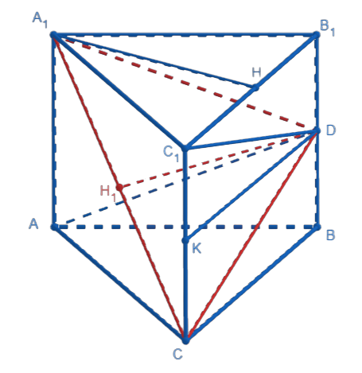

Основные методы решения стереометрических задач
Данный метод заключается в том, что при решении задачи объем какого-либо тела записывается двумя способами, затем с помощью приравнивания полученных двух выражений находится искомая величина.
Метод объёмов можно использовать для вычисления расстояния от точки до плоскости, угла между прямой и плоскостью или между плоскостями, расстояние между прямыми.
В правильной треугольной призме основания равны боковые ребра равны точка – середина ребра Найдите расстояние от вершины до плоскости
1) Так как в основаниях правильной треугольной призмы лежат правильные треугольники, т.е. все их внутренние углы равны тогда

Так как основания призмы – равные треугольники, то
По свойству боковых ребер правильной треугольной призмы следовательно, тогда
По свойству боковых ребер правильной треугольной призмы следовательно, тогда
2) Проведем
По свойству боковых ребер следовательно,
Имеем (признак перпендикулярности прямой и плоскости), следовательно,
Проведем
По свойству боковых ребер
как смежные стороны прямоугольника.
как перпендикуляры между параллельными прямыми.
Так как правильный, то высота также является и медианой, т.е.
По теоереме Пифагора из п/у
3)
4) По теореме Пифагора
из п/у
из п/у
из п/у
5) Так как то – равнобедренный.
Опустим высоту которая также является медианой в р/б следовательно,
По теореме Пифагора из п/у
6) Выразим объем пирамиды двумя способами:
Приравняем полученные выражения:
Из полученного уранвения выразим расстояние от вершины до плоскости
Ответ:
В правильной шестиугольной призме боковые ребра которой равны сторона основания равна Найдите расстояние от точки до плоскости
В правильной четырехугольной пирамиде с вершиной сторона основания равна 18 а высота равна На ребрах и отмечены соответственно точки и такие, что
а) Докажите, что плоскости и параллельны.
б) Найти расстояние от точки до плоскости